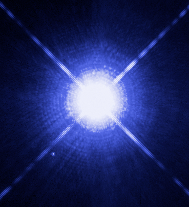

A peculiar star is a star whose spectrum shows elemental abundances that differ significantly from what is expected for stars of its temperature and luminosity class. In stellar astronomy, the term 'peculiar' is a technical designation—not a colloquial one—indicated by the suffix 'p' appended to the spectral type (e.g. A2p, B9p). The most common class are the chemically peculiar (CP) stars of the upper main sequence, which occur at spectral types B and A where stable, non-convective atmospheres allow the key physical mechanism—atomic diffusion—to operate over stellar lifetimes.

NASA, ESA, H. Bond (STScI), and M. Barstow (University of Leicester)
In atomic diffusion, radiation pressure selectively levitates certain elements (such as Mn, Sr, Y, and Zr) toward the stellar surface while gravity causes others (such as He, N, and O) to settle downward. The process requires a calm atmosphere: rapid rotation drives convective mixing that erases the diffusion-built abundance patterns, so slow rotation is nearly universal among chemically peculiar stars. Approximately 5–10% of hot main-sequence stars show chemical peculiarities.
The standard classification was established by George W. Preston in 1974, dividing hot CP stars into four groups. CP1 (Am, or metallic-line) stars are non-magnetic, typically inhabiting binary systems where tidal braking has slowed rotation; they show weak calcium and scandium lines alongside enhanced zinc, strontium, and barium. Sirius A (α CMa), the brightest star in the night sky, is the most familiar example. CP2 (Ap/Bp) stars are the most studied subclass: strong organised magnetic fields (typically 1–30 kG, reaching 33.5 kG in HD 215441) inhibit convection and lock abundance patterns into surface 'spots' preferentially located near the magnetic poles. Because the magnetic axis is tilted relative to the rotation axis (the oblique rotator model), the Earth-facing hemisphere cycles through different spot configurations, producing periodic variation in the spectrum and brightness. A subclass of Ap stars—the rapidly oscillating Ap (roAp) stars—also pulsate in high-overtone pressure modes with periods of 5–23 minutes; about 40 are known. The most extreme roAp star is Przybylski's Star (HD 101065), which has overabundances of lanthanide rare-earth elements thousands of times solar and a rotation period of roughly 188 years. CP3 (HgMn) stars are non-magnetic, very slow rotators with enormous overabundances of ionised mercury and manganese; Alpheratz (α And) and Maia (20 Tau) are bright examples. CP4 (He-weak) stars show weaker helium lines than their temperature predicts; a related group, He-strong stars, occupies hotter ranges of 18,000–23,000 K.
Cool chemically peculiar stars (spectral types G–M) arise by different mechanisms. Carbon stars are luminous red giants with a carbon-to-oxygen ratio exceeding 1, produced when the third dredge-up on the asymptotic giant branch (AGB) brings internally synthesised carbon to the surface. S-type stars are AGB giants in which the ratio has risen to near 1, producing strong ZrO absorption bands; they represent the transitional state between ordinary M giants and full carbon stars. Barium stars (G–K giants) carry overabundances of slow neutron-capture (s-process) elements because an AGB companion transferred enriched material before evolving into a white dwarf; all confirmed barium stars are binaries. A distinct group, the Lambda Boötis (λ Boo) stars, are Population I A-type dwarfs that are iron-poor at their surfaces—the opposite of most CP stars—probably through accretion of metal-depleted gas from a circumstellar disc.
Chemically peculiar stars serve as natural laboratories for studying atomic diffusion, stellar magnetic fields, and nucleosynthesis in evolved stars.